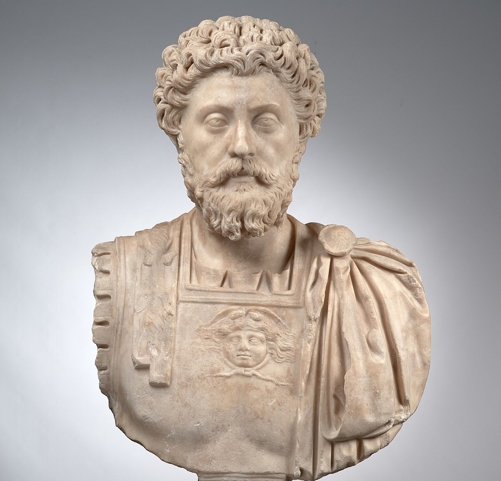
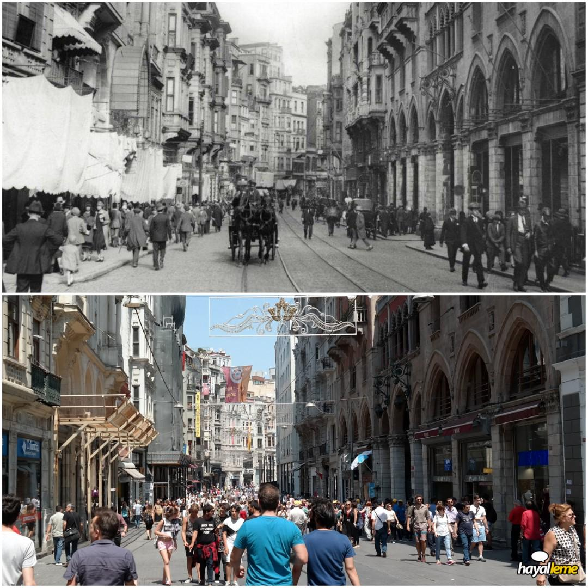

New
Marcus Aurelius And Stoa
The Greek philosopher Plato said, "Either philosophers should be the philosopher of kings or
kings." The Roman emperor Marcus Aurelius, who follows this quote, and his philosophical view
guide many people even today.
History , Philosophy
June 24, 2023
2 comments
New
Changing World, Unchanging Man Muhsin Bey
Cities and societies, like people, are in a constant state of transformation. After these
transformations, new moral values emerge. Muhsin Bey (1987) coincides with the stage of change
of these norms.
Movie, Analysis , Culture
June 16, 2023
2 comments

Beyoğlu From Past To Present
Today,I will tell you the story of the historical district Beyoglu, which hide memories from the
Byzantine Empire and the Ottoman Empire, from the past to the present.
History , Analysis , Culture
May 14, 2023
1 comments
Why Did I Choose Being a Front-end
Developer?
For those who have decided to become a software developer but cannot decide which direction to
take in the sector, I will explain the front-end I specialize in this article.
Software , Design
March 4, 2023
2 comments
Advice For Those New To Software
For those who are new to software, be sure to read this post about my experiences.
Software
February 25, 2023
4 comments
Bodybuilding Tips From The World Famous
Personal Trainer
You can have the body you want more easily with a few tips from world-renowned personal trainer
Yahya Çınar for those who want to increase muscle mass.
Fitness
January 16, 2023
3 comments